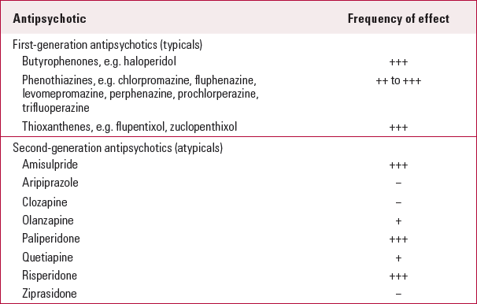
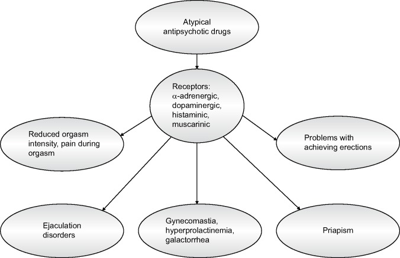
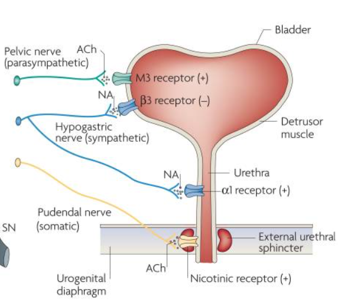

56 프로락틴과 비뇨기계 장애
56.1 고프로락틴혈증
56.1.1 개요
남성에게 있어서 성적 역량, 그리고 여성에게 있어서 규칙적인 월경과 배란은 정력과 풍요를 상징하는 가늠자이자 자존감을 구성하는 중요한 요소이다. D2 차단효과는 어쩔 수 없이 프로락틴의 증가를 동반하며 성적 기능에 상당한 영향을 끼친다. 성적 역량(sexual potency)의 저하는 드러내놓고 논의하기 껄끄러운 주제로, 환자들이 자발적으로 호소하기 보다는 그저 말없이 약을 먹지 않는다. 반면 여성에게 있어서 무월경이나 유즙 분비는 건강에 대한 우려와 공포로 다가온다. 가끔 생리불순을 이유로 산부인과 진료를 본 후, 프로락틴선종(prolactinoma)이 의심된다며 급하게 신경외과를 찾는 웃지못할 사례가 생기기도 한다.
뇌하수체에서 분비되는 프로락틴은, 분비억제 요소1 작용을 하는 도파민과, 분비자극 요소2 역할을 하는 TRH와 VIP3 에 의해 조절된다. 프로락틴의 정상치는 검사방법에 의해 조금씩 다르나, 일반적으로 남성에서는 20ng/mL 미만, 여성에서는 25ng/mL 정도이다.[1]
1 Prolactin-release inhibiting factor (PIF)
2 Prolactin-releasing factor (PRF)
3 Vasoactive intestinal peptide (VIP)
조현병 환자의 고프로락틴혈증(hyperprolactinemia)을 모두 항정신병 약물 탓으로만 볼 수 없는 이유는, 스트레스, 임신/수유 등 생리적 원인을 비롯하여, 유증상 혹은 무증상 갑상선 기능저하증, 뇌하수체 선종, 흉곽의 손상, 신부전, 항우울제, 고혈압약제 등의 약물, 특정한 종류의 허브 등 다양한 원인이 있을 수 있기 때문이다. 특히 조현병 환자들은 애초에 도파민 불균형 상태에 놓여있기 때문인지, 항정신병 약물을 사용하지 않더라도 약 25% 정도에서 프로락틴 치의 상승이 발견된다.[2,3]
이런 변인들을 감안한다 하더라도 항정신병 약물은 고프로락틴혈증의 가장 흔한 원인이며, 약물 종류에 따라 혈중 프로락틴 수치가 정상치의 10배 이상 상승할 수 있다.[4] 대체로 고역가 약물이 상승 효과가 크며, 저역가 약물 및 비정형 약물들은 상대적으로 효과가 작다. 특히 문제가 되는 것은 리스페리돈(팔리페리돈)과 아미설프라이드로 거의 70~100% 환자에서 고프로락틴혈증이 발생한다. 이에 반해 클로자핀, 아리피프라졸은 이 비율이 5% 미만에 지나지 않는다.[5] 동일한 약물을 쓰더라도 가임기 여성, 특히 출산력이 있는 여성에서 상승 폭이 크다.[6,7] 폐경 후에는 정상적으로도 성호르몬이 저하될만큼 저하되어 있기 때문에 프로락틴 수치가 높더라도 후유증은 거의 발생하지 않는다.[4] 고프로락틴혈증은 다른 부작용과 달리 시간이 지나도 잘 없어지지 않는데, 다만 후유증의 빈도는 급성기 때보다 조금 감소한다.[8]

56.1.2 고프로락틴혈증의 후유증
고프로락틴혈증은 단기적으로는 월경불순 및 성적 부작용을 일으키지만, 이 상태가 오래 유지되면 전반적인 신체 건강에도 영향을 미친다. 따라서 상승된 프로락틴을 수년간 아무 대책없이 방관하는 것은 바람직하지 않다. 고프로락틴혈증의 후유증은 프로락틴 자체의 영향때문일수도 있지만, HPG 축4 의 교란으로 인해 성호르몬5이 감소한 결과일 수도 있다. 단기적으로 대표적인 후유증은 월경 주기 혼란, 성기능 장애, 불임, 유즙 분비, 여성형 유방 및 성기능 장애이지만, 장기적 관점에서는 골다공증, 심혈관 질환, 몇가지 암발생이 문제가 된다.[9]
4 Hypothalamic–pituitary–gonadal axis (HPG axis)
5 성호르몬 (sex hormone): 여성에서 분비되는 estrogen/progesterone과 남성에서 주로 분비되는 androgen을 가리킨다. Testosterone은 대표적인 androgen 중 하나이다. 이밖에 부신에서 생성되는 dihydrotestosterone (DHT), androstenedione (A4), androstenediol (A5), dehydroepiandrosterone (DHEA)이 androgen에 포함된다.
56.1.2.1 단기 후유증
여성에서 두드러진 현상은 무월경(amenorrhea)과 희발월경(oligomenorrhea)을 포함한 월경불순이다. 프로락틴 농도가 어느 정도 상승해야 무월경이 되는지는 개인마다 다르지만, 대체로 60~100ng/mL 이상이면 월경이 멈춘다.[10] 월경불순이 발생하는 비율은 약물마다 천차만별이라 가늠하기 힘든데, 대체로 항정신병 약물 투여 중인 가임기 여성 환자의 40~50%에서 발생한다고 추산된다.[9] 여성의 월경은 GnRH6 의 박동성(pulsatile) 분비를 기초로 하며, 성호르몬과 함께, LH, FSH7 분비가 정교한 리듬에 맞춰 동조됨으로써 이루어진다.[11] 프로락틴이 상승하면 GnRH의 박동성 분비가 방해를 받고, 성호르몬이 폐경 상태 정도로 감소할 뿐 아니라, LH, FSH의 피드백 메커니즘이 작용하지 못하여 월경이 제대로 일어나지 못한다.
6 Gonadotropin-releasing hormone (GnRH)
7 Luteinizing hormone (LH), follicle-stimulating hormone (FSH): LH와 FSH는 생식선자극호르몬(gonadotropin)이라 불리우며, 남성에서는 고환, 여성에서는 난소를 자극한다.
프로락틴은 남성에서는 여성형 유방(gynecomastia), 남성과 여성 모두에서 유즙 분비(galactorrhea)를 일으킬 수 있다. 이는 성호르몬을 거치지 않고, 프로락틴이 직접 조직에 영향을 주어 발생한다는 점에서 월경불순과는 다르다. 여성에서 유즙 분비의 빈도는 10~50% 빈도로 보고되며[12], 출산 경력이 있는 여성에서 훨씬 더 빈발한다.[9] 여성형 유방은 훨씬 드물기는 하지만, 남성에서 혹은 사춘기에 도달하지 않은 소녀에서 가슴이 부풀어오르는 경우 수치심을 비롯하여 상당한 정서적 충격을 줄 수 있다.
항정신병 약물에 의한 성기능 저하가 단순히 프로락틴 상승과 성호르몬 저하에 의해서만 결정되지는 않지만, 성호르몬이 감소되면 일차적으로 성욕 및 성적 흥분/극치감이 줄어든다. 프로락틴 수치가 50ng/mL 이상인 남성 환자의 80%가 성욕 감소 및 발기부전을 호소했다는 보고가 있다.[13] 대부분의 저자들은 남성의 성기능 저하와 프로락틴 간의 연결성을 인정하지만, 클로자핀, 아리피프라졸처럼 프로락틴을 크게 올리지 않는 약물도 성기능 저하를 유발한다는 것을 감안하면, 다른 요인도 개입되어 있는 것이 분명하다.[14,15]
여성의 경우에도 프로락틴이 상승하면 성욕 및 극치감이 저하되며, 질의 건조로 인한 성교통이나 극치감 중 통증이 동반될 수 있다.[16] 그러나 프로락틴 상승과 성호르몬 저하가 여성의 성적 부작용에 어느 정도나 기여하는 지는 불분명하다.[17] 5-HT2 수용체 차단은 극치감을 지연시키고, 항콜린 효과는 질 분비를 억제하며, 항히스타민 효과로 인한 진정 작용은 성적 자극보다는 수면을 택하도록 유도할 수 있다. 한편 여성들은 성적 부작용을 자발적으로 호소하는 빈도가 남성보다도 훨씬 적은데다가, 월경불순과 불임문제에 더 신경을 쓰기 때문에 제대로 관심을 못 받는 경우가 많다.

56.1.2.2 장기 후유증
프로락틴이 오랫동안 상승되어 있으면 골다공증 위험이 증가한다. 잘 알려져 있다시피 장년기 이후의 골밀도 유지는 에스트로겐과 밀접한 연관이 있다.8 에스트로겐이 줄어들면 파골세포(osteoclast)에 의한 골흡수가 증가하고, 조골세포(osteoblast)에 의한 새로운 골형성은 줄어들기 때문에, 골감소증이나 골다공증9이 촉진된다.[21] 더군다나 프로락틴은 직접적으로 조골세포 세포막에 발현된 프로락틴 수용체에 작용하여, 조골세포의 활성과 증식을 감소시킨다.[22]
8 에스트로겐과 골밀도: 폐경기 여성의 에스트로겐 감소가 골다공증을 유발한다는 것은 1941년 미국의 내분비학자인 Fuller Albright가 알아내었다.[18] 그로부터 35년 후에는 에스트로겐 대체요법을 통해 골다공증을 예방할 수 있다는 것이 밝혀졌다.[19] 흥미로운 것은 남성에서도 골밀도를 유지하는 것은 테스토스테론이 아니라 에스트로겐이라는 것이다.[20]
9 감소증과 골다공증: 골다공증(osteoporosis)은 골밀도(bone mineral density, BMD)가 평균보다 표준편차의 2.5배 이상 감소되어 있을 때로 정의된다. 반면 골감소증(osteopenia)는 1배 이상 2.5배 미만 감소되어 있을 때를 가리킨다.
아일랜드에서 진행된 한 연구에 따르면, 항정신병 약물을 10년 이상 투여받은 55명의 환자 중 25명(44%)에서 골밀도가 감소되어 있었으며, 골밀도 감소는 프로락틴 농도와 유의한 상관관계가 있었다.[23] 가임기 여성 환자를 대상으로 일부는 올란자핀, 나머지는 리스페리돈/아미설프라이드를 1년간 투여했을 때 전자에서는 골밀도가 다소 증가했으나, 후자에서는 점진적으로 감소하였다.[24] 이렇듯 많은 연구가 프로락틴 농도와 골밀도 간의 음의 상관관계를 보고하고 있지만, 꼭 그렇지만은 않다는 연구도 있다. 이러한 차이는 사용한 약물의 종류와도 상관이 있는 것 같다.[25]
골밀도 감소와 골다공증의 위험은 고령 환자에게만 해당되는 것이 아니다. 조현병이 발병하기 시작하는 사춘기 후반부터 초기 성인기는 아직 뼈의 형성이 완료되지 않은 상태로, 이 시기에 골다공증 발생 위험이 상당히 높다. 따라서 폐경 후 환자뿐만 아니라 25세 미만 환자들에게도 프로락틴 및 골밀도를 자주 모니터링하는 것이 필요하다.[16]
한편 고프로락틴혈증이 지속되면 지방세포의 인슐린 저항성을 증가시킬 수 있다. 실험실에서 배양된 β 세포에 프로락틴을 투여하면 β 세포가 증식될 뿐 아니라 인슐린 분비가 늘어난다.[26] 장기간의 인슐린 과다분비는 쉽게 저항성으로 이어지기 때문에 인슐린 분비가 늘어나는 것은 바람직한 현상이 아니다. 실제 역학조사에서도 프로락틴 농도와 HOMA-IR10와 같은 인슐린 저항성 지표간에 상관관계가 발견된다.[28] 따라서 항정신병 약물에 의한 고프로락틴혈증은 대사증후군 발생에 일부 기여할 것임을 짐작할 수 있다.[29]
10 HOMA-IR (Homeostatic Model Assessment for Insulin Resistance): Matthew 등[27]이 1985년에 제안한 인슐린 저항성을 계산하는 공식으로 HOMA-IR = (혈당치 x 혈중 인슐린 농도 mg/dL)/405 로 계산된다.
고프로락틴혈증을 일으킨 쥐는 식욕이 늘고 체중이 증가하며[30], 뇌하수체 선종 때문에 고프로락틴혈증을 보이는 환자들은 대체로 비만한 편이다.[31] 따라서 프로락틴이 직접 체중 증가에 영향을 미칠 수 있을 것으로 보인다. 체중 증가와 대사증후군 위험은 직접 심혈관계 질환에 의한 사망률을 높일 수 있다. 독일에서 4,000명 가까운 환자를 대상으로 분석한 바에 따르면, 프로락틴 농도의 상승은 모든 원인에 의한 사망률을 1.2배 정도 높였다.[32] 그러나 미국과 영국에서 행해진 비슷한 규모의 연구에서는 프로락틴이 관상동맥질환 위험과는 별 상관이 없는 것으로 나타났다.[33,34]
56.1.2.3 암 발생 위험
일부 학자들은 고프로락틴혈증이 유방암, 전립선암 그리고 뇌하수체 종양의 위험인자라고 여긴다.[35] 실제로 1990년대 말 전임상 연구에서 프로락틴은 유방암 세포의 성장을 촉진하는 것이 발견되었다.[36] 정상 유선세포에 비해 유방암 세포는 프로락틴 수용체를 과다하게 발현하며, 따라서 프로락틴에 대해 민감하게 반응한다.[37] 암세포들은 스스로 프로락틴을 분비하여 자기 자신의 수용체를 자극하는 자가분비(autocrine) 현상에 의해 세포 증식을 유도할 수도 있다.[38]
물론 세포주에 대한 결과를 인간에 직접 적용할 수는 없으나, 경각심을 불러일으키기에는 충분하다.[16] 2016년에 보고된 메타 분석에서 고프로락틴혈증이 유방암 위험을 일으킬 상대위험도는 1.16(1.04~1.29)으로 통계적으로는 유의하지만 임상적으로는 별 의미가 없었다. 특히 ER+/PR+11 인 폐경기 환자에서는 유의한 연관이 있었으나, 가임기 환자나 ER-/PR-인 환자에서는 연관이 발견되지 않았다.[39] 하지만 항정신병 약물 사용이 유방암 위험을 높인다는 연관성은 아직 발견되지 않았으며, 역학조사나 전임상 연구의 증거들도 불분명한 편이다.[40] 다만 유방암의 개인력 및 가족력이 있다면, 프로락틴을 증가시키는 약물은 가급적 피하는 것이 좋겠다.[16]
11 ER+/PR+: estrogen receptor와 progesterone receptor 수용체가 모두 발현되는 암 유형. 유방암은 수용체 발현 양상에 따라 1) ER+/PR+ type, 2) HER2+ type (HER2는 Receptor tyrosine-protein kinase erbB-2의 다른 명칭), 3) triple negative type으로 나뉜다. 전체 유방암 환자의 80% 가량이 ER+/PR+ type이며, 이들은 호르몬 치료에 잘 반응한다.
한편 2006년 Szarfman 등[41]은 약물이상반응 데이터베이스를 분석하여, 각종 항정신병 약물 사용 환자군에서 뇌하수체 선종의 빈도를 조사하였다. 그 결과 리스페리돈 사용군이 타 약물 사용군보다 현저히 뇌하수체 선종의 빈도가 높은 것으로 나타났다. 자연스럽게 이 결과는 장기간 지속된 고프로락틴혈증이 실제로 뇌하수체 선종을 유발하는 것 아닌가 하는 의구심을 낳았다. 하지만 3년후에 다른 저자들이 이 자료를 재분석하였고[42], 이 결과가 단순히 프로락틴 수치가 상승된 환자들이 MRI 촬영을 많이 했기 때문에 무증상의 뇌하수체 선종이 탐지된 비율이 높았던 것 뿐임을 밝혔다. 정상인의 16~22%가 뇌하수체 선종을 갖고 있으며, 대부분이 무증상이기 때문에 죽을 때까지 모른채 넘어간다.[43] 따라서 항정신병 약물에 의한 프로락틴 상승이 뇌하수체 선종을 일으킬 것이라는 우려는 별 근거가 없는 것 같다.
56.1.3 치료
항정신병 약물을 사용하면 프로락틴 수치가 올라갈 것이 예견되므로, 약물 사용 전에 프로락틴 농도를 측정해 놓는 것이 좋다. 게다가 일부 조현병 환자는 약물 사용 이전에도 고프로락틴혈증을 보일 수 있다는 것을 기억해야 한다. 이후에는 예상되는 증상에 대해 주기적으로 질문하여 모니터링 하며, 의심되는 경우에는 정기적으로 프로락틴 농도를 측정하다. 간혹 일부 치료지침서에, 항정신병 약물을 72시간 이상 끊고 프로락틴 농도를 측정하여, 약물이 원인인지를 확인하라는 권고가 들어있긴 하지만, 증상 악화 우려때문에 현실적으로 적용하기는 어렵다. 그러나 약물 이외에 다른 원인이 있을 지도 모르기때문에, 약물 용량을 줄이거나 교체한 후 다시 한번 측정하여 정상화되는지 확인하는 것이 바람직하다.[44]
고프로락틴혈증을 예방하거나 완화시키기 위해서 다양한 치료 전략이 권고되어 왔으나 여전히 논란이 많다. 다른 부작용에서와 마찬가지로 기본적인 권고 사항은 항정신병 약물을 최대한 낮은 용량으로 투여하는 것이며, 다약제 병용을 피하는 것이다. 가능하다면 프로락틴을 높이지 않는 약물로 전환하는 것이 필요하지만, 여의치 않다면 약물을 그대로 사용하면서 metformin, cabergoline등의 약물 치료를 시도해본다. 그러나 새로 투여된 약물이 또 다른 부작용을 불러 올 수 있음을 유의해야 한다.
56.1.3.1 항정신병 약물의 감량과 변경
상승된 프로락틴의 장기적 부작용이 우려되긴 하지만 당장 환자가 무월경이나 성기능 감소에 대해 별 불만이 없다면, 당장 약물을 감량하거나 교체하여 재발의 위험을 무릅쓸 필요는 없을 것이다. 그러나 환자에게 이런 부작용이 큰 의미가 있고, 순응도를 떨어뜨리는 상황이라면, 위험을 감수하고라도 대책을 강구해야 한다.
고프로락틴혈증의 위험이 가장 높은 것은 고역가 정형 약물과 함께, 리스페리돈, 팔리페리돈, 아미설프라이드 그리고 아세나핀이다. 루라시돈, 올란자핀은 중간 정도로 프로락틴을 상승시키며, 퀘티아핀, 지프라시돈, 일로페리돈, 카리프라진, 루마테퍼론은 거의 프로락틴에 대한 영향이 없다. (8-1-5절 참조)
따라서 고위험 약물을 사용하고 있다면, 프로락틴 중립적인 약물로 바꿔볼 수 있다. 한편 프로락틴을 조금이라도 낮출 가능성이 있는 약물은 아리피프라졸이다. 아리피프라졸의 도파민 부분 효현 효과는 프로락틴 분비자극 요소로 작용한다. 따라서 현재 사용 중인 항정신병 약물을 다른 약물로 교체하기 어려운 경우에는, 아리피프라졸을 추가적으로 사용하는 것이 가장 매력적인 대안이 될 수 있다.[45] 최근 이루어진 메타 분석에서는 기존 약물에 아리피프라졸은 추가했을 때, 프로락틴 농도가 약 65.52(24.08~104.91)ng/mL 감소하는 것으로 추정되었다.[46] 프로락틴 농도를 낮추기 위해 아리피프라졸을 병용할때는 최대 6mg/day 까지 사용한다. 이 정도 수준까지는 용량에 비례하여 프로락틴 농도가 낮아지나, 이 이상에서는 감소 효과가 더 이상 커지지 않는다.[47]
56.1.3.2 약물 치료
Metormin은 당뇨병 치료제이지만, 예로부터 다낭성 난소증후군12에서 동반되는 당뇨와 무월경을 치료하는데 사용되어 왔다. 이러한 경험을 통해 metformin이 PCOS 환자에서 비정상적으로 증가되어 있는 androgen의 생성을 차단할 뿐 아니라, 프로락틴 농도를 낮추는 효과가 있다는 것이 발견되었다.[49–51]
12 다낭성 난소증후군 (polycystic ovary syndrome, PCOS): HPG 축의 이상으로 난소의 androgen 분비가 증가하여 배란이 이루어지지 않고, 월경 불순, 다모증, 비만, 불임과 함께 장기적으로 대사 증후군으로 발전하는 상태. 허리, 둔부에 집중적인 중심형 비만이 나타나며, 자궁내막 증식증, 자궁내막암과 같은 질환의 위험이 높아진다. 항정신병 약물에 의해 유발되는지는 불확실하나 확실히 증상이 악화된다.[48]
고프로락틴혈증으로 인한 무월경 치료를 위해 metformin을 사용한 연구들은 유의한 증상 호전과 프로락틴 농도의 감소를 보고하였다. 임상시험 결과를 종합해보았을 때 약 67%의 환자가 월경을 다시 시작했고, 91%의 환자는 유즙 분비를 멈췄다.[8] Metformin은 항정신병 약물에 의한 체중 증가나 혈당 상승에도 효과가 있으므로, 매력적인 치료 방안으로 자리잡았다.
그러나 metformin은 무월경에 효과가 있을지언정, 프로락틴의 농도를 낮추는 메커니즘이 불분명하고 증거가 충분하지도 않다.[47] 프로락틴 분비를 원상대로 회복시키려면 결국 도파민 효현제를 사용할 수 밖에 없는데, 이들은 정신병적 증상 악화의 위험이 있다. 가장 보편적으로 사용되어 왔던 도파민 효현제는 bromocriptine (Parlodel®)이다. Bromocriptine은 월경불순, 유즙분비, 불임, 성호르몬 저하 등 다양한 부인과 질환에 사용되어 왔다.[52] 이 약물은 현재도 사용되고 있지만, 작용 시간이 짧아 하루 세번 복용해야 하며, 기타 부작용도 많은 편이다. 이를 개선하기 위해 작용시간이 긴 도파민 효현제로 개발된 것이 cabergoline과 quinagolide이다. Cabergoline은 맥각 유도체(ergot derivative)로 뇌하수체 선종을 비롯하여 다양한 원인에 의한 고프로락틴혈증에 치료제로 사용된다. 정상인에 있어서 bromocriptine과 cabergoline은 비교적 안전하게 사용할 수 있다고 하나, cabergoline 사용 후 정신병적 증상이 악화되거나 조증 삽화가 유발된 사례가 연달아 보고되면서 기존 조현병 환자에게 사용하기에는 부담스러워졌다.[53–55] Quinagolide는 전혀 다른 구조의 D2 선택적 효현제로 cabergoline과는 부작용 프로파일이 다르다.[56] 아직 조현병 환자에 대한 자료는 부족하지만, 뇌하수체 선종이 있던 만성 정신병 환자에게 아리피프라졸과 함께 안전하게 사용되었다는 증례보고가 있다.[57]
종합해보면 일반적인 고프로락틴혈증의 치료법을 약물로 인한 조현병 환자의 고프로락틴혈증에 응용하는데는 여러모로 무리가 있다. 당장의 무월경이 원하지 않는 임신을 막아주는 등 필요한 면이 있다 하더라도, 장기적인 건강을 고려했을 때 언젠가는 프로락틴 상승 효과가 적은 약물로 교체하는 것이 가장 건설적인 대안인 것 같다.
56.1.3.3 임신
프로락틴 농도가 상승되어 있는 동안에는 HPG 축의 교란때문에 여성은 자연히 불임 상태에 놓이게 된다. 그러나 고프로락틴혈증이 오래 유지된다고 해서 영구적인 불임이 된다는 증거는 없으며, 프로락틴 농도가 정상화되어 배란이 이루어지면 임신 가능하다. 한편 일반적으로 의사들은 항정신병 약물을 투여받는 남성이라 할 지라도 아이를 갖는데 아무 문제가 없다고 설명하지만, 실제로는 기능을 저하시키고 정자 생산량을 줄이기 때문에, 난임의 원인이 될 수 있다.[58] 그러나 그 영향은 여성에 비해서는 훨씬 적은 편이며, 체계적으로 프로락틴 농도와 정자의 활동성을 비교한 연구에서는 별 차이가 발견되지 않았다.[59]
환자가 아이를 갖기 원하는데 임신이 되지 않는 경우도 있지만, 더 많은 경우는 환자가 무월경을 대수롭지 않게 받아들인 상태에서 피임에 대해 전혀 신경쓰지 않는 것이다. 이러다가 약물 감량이나 교체 등으로 인해 프로락틴이 정상화되면 원치 않는 임신을 하게 될 수 있다. 따라서 프로락틴 치 정상화를 위해 약물을 변경할 때는 피임 필요성에 대해 교육해야 한다.
56.2
56.3 성기능 장애
56.3.1 유병률
성기능 장애는 항정신병 약물의 흔한 부작용 중 하나로, 남성의 약 절반, 여성의 약 ⅓ 정도에서 나타난다. 정확한 비율은 알기 어려운데, 이는 사용 약물의 차이, 조사 방법의 차이, 성기능 장애를 어떤 범위까지 확장하느냐는 견해의 차이때문에 전혀 다른 결과가 얻어지기 때문이다. 월경불순, 배란 장애 등 임신/수유와 관련된 부작용까지 포함시키면 여성에서의 유병률이 80% 이상이지만, 성적 역량에 해당하는 부작용만 고려하면 30% 정도까지 떨어진다.
이렇게 보고된 비율은 임상시험에서 체계적 설문지나 인터뷰를 통해 얻어진 결과로, 진료 현장에서 성기능 장애를 직접 호소하는 빈도는 이보다 훨씬 적을 수 있다. 성별, 연령군에 따라 유병률이 다른 것은 성기능에 대한 기대나 관점 차이에서 비롯되는 것 같다. 남성과 여성 모두 성적 욕구가 감소되고 극치감을 느끼기 어려워지며, 남성의 약 40%는 발기 부전, 20% 정도는 사정에 어려움을 겪는다. 드물긴 하지만 지속발기증(priapism)이 나타나는 경우도 있다.
56.3.2 원인
성기능은 단순한 신체 기능이 아니며, 정신질환 자체, 유전/생물학적 요인, 심리적 요인, 병용되고 있는 기타 약물 등 다양한 변수가 영향일 끼치고 있기 때문에, 뾰족하게 이것이 윈인이라고 단정하기 어렵다.
56.3.2.1 질환 자체와 관련된 요인들
무쾌감, 무의욕 등 음성증상이 있으면, 성적 욕망이나 쾌감을 느낄 리 만무하다. 게다가 많은 환자들은 사회적 위축 상태에 놓여있기 때문에, 성적 대상과 접촉할 기회 자체가 없다. 설령 교제할 기회가 생긴다 하더라도 정동이 둔마되고, 타인의 감정을 잘 읽지 못하기 때문에, 친밀감이 성적 관계로 발전하기 어렵다. 성적 파트너가 있는 경우에도 정상적인 성생활을 즐길 수 있는 능력이 손상된다. 만약 우울감이 동반되었다면 더더욱 성적 욕구가 사라질 것이다. 뿐만 아니라 잦은 재발로 인한 사회적 기능 손상, 비만 등 성적 매력의 상실, 성적 대상을 찾는 것을 포기하게 만드는 사회적 편견 등은 더더욱 정신증 환자가 성적 관계를 형성하는 것을 어렵게 한다.
성기능의 저하가 오로지 약물 때문만은 아니라는 것은, 아직 질병이 발병하지 않은 초고위험군 (ultrahigh-risk) 환자에서도 성기능 장애가 발견된다는 것에서 확인할 수 있다. 같은 초위험군 환자라도 정신증으로 발병하지 않은 군보다 발병한 군에서 성기능 장애가 더 많이 발견되었다는 것, 증상의 심각도와 장애의 정도가 상관관계를 보였다는 것 역시, 성기능 저하가 정신질환 자체의 결과일 가능성을 시사한다.[60,61]
56.3.2.2 유전적 요인
도파민 신호전달계는 성적 흥분 및 발기 등 주요한 성적 기능에 깊숙히 관여하고 있으며, D2, D4 수용체의 변이는 성기능 장애와 연관이 있다고 한다.[62,63] 따라서 조현병 환자에서 유달리 성기능 장애와 연관된 변이가 많이 나타날 가능성이 있으며, 조현병 자체와 관련된 변이는 아니라 하더라도 항정신병 약물에 의한 성기능 장애의 위험을 고조시키는 변이가 있을 수 있다.[64] 그러나 아직은 성기능과 관련된 유전적 요인에 대한 연구 자체가 미흡한 편이다.[65]
56.3.2.3 병용 약물
조현병 환자들은 항정신병 약물 말고도 다양한 약물을 복용하고 있다. 모든 계열의 항우울제, 특히 세로토닌 시스템을 건드리는 약물들은 지연사정(delayed ejaculation), 역행사정(retrograde ejaculation)을 흔히 일으키며, 항정신병 약물과 마찬가지로 성욕 및 성적흥분을 줄이고, 극치감을 느끼기 어렵게 만든다. 이런 부작용이 발생할 빈도는 SSRI, SNRI에서 거의 60~70%에서 달한다.[66]
반면, 기타 항우울제 계열인 mirtazapine, bupropion, agomelatine 등의 약물은 성적 부작용을 일으키는 위험이 훨씬 낮다. 따라서 가뜩이나 성적 부작용을 겪고 있는 조현병 환자에게 항우울제를 병용할 에정이라면 후자의 약물을 고려해보는 것이 어떨까 싶다.
리튬과 발프로에이트 등의 기분안정제는 물론 벤조디아제핀 등 항불안제까지도 성적 욕망과 역량을 줄일 수 있다.[67,68] 이렇게 따지면 거의 모든 향정신성 의약품이 성기능에 부정적 영향을 미친다는 뜻이 된다.[69–71] 게다가 대사증후군 치료를 위해 투여하게 되는 고혈압약, 심혈관 질환 예방 약물 들 역시 성적 부작용을 초래할 수 있다.[72,73]
하지만 역으로 적극적인 치료로 정신증상이 호전되어, 정서가 안정되고 불안이 줄어들면 성적 친밀도가 높아지고 성적 역량도 증가할 것이다. 결국 모든 약물은 득과 실이 있으며 이를 저울질 하는 것은 의사의 책임이다.
56.3.2.4 항정신병 약물
항정신병 약물은 성반응 주기13를 이루는 모든 단계에 부정적인 영향을 미친다. 각 단계는 서로 다른 신경전달물질에 의해 영향을 받으며, 예를 들어 흥분기에는 도파민이 주요한 역할을 하며, 고조기나 절정기에는 노르에피네프린과 아세틸콜린의 영향이 강하다. 반면 세로토닌은 대체로 모든 단계에서 억제하는 방향으로 작용한다.[70,74]
13 성반응 주기 (sexual response cycle): 인간이 성적 자극을 받았을 때의 생리적 변화를 1) 흥분기(excitement), 2) 고조기(plateau), 3) 절정기(orgasm), 4) 해소기(resolution)의 4단계로 나눈 모델로, 1996년 William Masters와 Virginia Johnson에 의해 제안되었다.
대부분의 항정신병 약물은 성욕을 감소시키지만, 그 효과는 phenothiazine 계열의 약물에서 더욱 두드러진다. 과거 만성 정신병동에서 환자들 사이의 부적절한 성적 접촉을 막기 위해 클로르프로마진 등을 사용하기도 했다. 항남성호르몬제가 사용되기 전에는 성범죄자의 일탈 행동을 막기 위한 화학적 거세에 클로르프로마진, benperidol과 같은 항정신병제가 사용되기도 하였다.[75,76]
비정형 약물 중에서는 단연 리스페리돈의 성적 부작용 빈도가 가장 높으며, 그 다음은 아미설프라이드 → 올란자핀 → 클로자핀 → 퀘티아핀 → 아리피프라졸 순서로 이어진다. 이 순서는 프로락틴 상승 정도의 순서와 동일하기 때문에, 아무래도 성호르몬에 대한 효과가 성적 부작용을 일으키는데 가장 큰 부분을 차지하는 것 같다. 다행인 것은 리스페리돈, 아미설프라이드를 제외한 비정형 약물들은 프로락틴 상승 효과가 그리 크지 않으며, 5-HT2A,2C 억제를 통해 D2 차단에 의한 성욕 감소 효과를 부분적으로 상쇄한다.[15]
이외에도 항정신병 약물의 항콜린 효과는 말초혈관의 확장을 억제하여 발기부전을 유발한다. α-아드레날린 수용체 길항 작용은 양면적인 효과를 지닌다. 원래 α1,2 수용체가 자극받아 평활근이 수축하면 발기가 줄어든다. 따라서 이들 수용체가 차단되면 발기가 유도되며 지나친 경우 지속발기증(priapism)이 발생할 수 있다.[77] 하지만 현실에서는 α 수용체 차단이 발기에 미치는 영향을 예측하기 힘들며 오히려 기능을 방해할 수도 있다. 한편 히스타민 수용체 차단으로 인한 진정 작용은 성적 흥분은 물론 성욕 자체를 저하시킨다.
56.3.3 치료
56.3.3.1 비약물적 개입
만약 약물을 쓴지 얼마 안 된 시점이라면 자연관해를 기다리는 것이 우선이다. 10~20%의 환자들은 6개월 이내에 저절로 증상이 좋아진다. 하지만 이러한 호전이 정신 증상이 좋아지면서 동반하여 좋아진 것인지는 구분할 길이 없다. 게다가 수개월 이상 기다리지 않는 한 호전을 실감하기 어렵다.[78]
만약 약물을 줄이거나 교체하기 어려운 상황이라면, 비약물학적 개입을 시도할 수 있다. 일반적인 성치료에서처럼 수행불안, 성적 파트너와의 갈등, 트라우마 병력 등에 대해 개인 혹은 부부상담을 할 수 있다. 체위를 바꾸거나, 성관계를 갖는 환경을 바꿔보는 것도 도움이 된다. 하지만 이 역시 금방 효과를 실감하기 어려우며, 호전이 더디면 순응도에 문제가 생길 우려가 높다.
따라서 환자가 자발적으로 고통을 호소할 정도라면 약물을 줄이거나 바꿀 수 밖에 없다. 용량 감소는 가장 먼저 손쉽게 할 수 있는 방법이지만, 대체로 별 효과가 없다. 가시적인 효과를 보려면 용량을 절반 이상 줄여야 하는데, 그러면 재발의 위험을 무시할 수 없다.[78]
약물을 교체한다면 프로락틴 농도에 영향이 적은 약물을 선택하는 것이 원칙이다. 이런 면에서 아리피프라졸이 가장 연구가 활발하게 이루어졌다. 아리피프라졸은 프로락틴 농도를 정상화시킬 뿐 아니라, 다른 항정신병 약물 및 항우울제로 발생한 성적 부작용을 회복시킨다. 더우기 기존 약물을 아리피프라졸로 변경하는 것뿐만 아니라, 그저 추가하는 것 만으로도 전반적인 성기능 및 만족도를 향상시켰다.[79,80] 2018년 발표된 DAAMSEL14 연구에서는 기존에 사용하던 항정신병 약물에 의해 프로락틴 상승과 성적 부작용을 경험하던 가임기 여성 환자에게, 위약과 아리피프라졸 병용 요법을 시행하였다. 16주 치료 후 아리피프라졸 투여군 중 절반에서 프로락틴 치가 정상으로 돌아왔고 덩달아 성기능 평가점수도 정상수준으로 회복되었다. 반면 위약군에서는 거의 변화하지 않았다.[81] 하지만 아리피프라졸의 효과는 기존 약물이 리스페리돈일때 특히 두드러지며, 기존 약물이 설피라이드/아미설프라이드인 경우에는 만족스럽지 못하다.[82]
14 Dopamine Partial Agonist Aripiprazole for the Management of Symptomatic ELevated Prolactin (DAAMSEL): 영어 수사학에 “damsel in distress”라는 표현은 남성이 구해주기를 기다리는, 위험에 빠진 젊은 여성이라는 뜻이 있다.
56.3.3.2 약물적 개입
만약 용량을 줄이거나 약을 바꾸어도 성기능이 회복되지 않는다면 고프로락틴혈증에서 소개한 도파민 효현제(bromocriptine, cabergoline, quinagolide)를 사용해본다. 또 다른 도파민 효현제인 amantadine과 pramipexole15 역시 시도해볼 수 있는 약물이다.[83–85]
15 Pramipexole (Mirapex®): 파킨슨병 및 하지불안증후군에 사용되는 pramipexole은 D2,3 자가수용체 효현제로 간혹 병적 도박, 과도한 쇼핑, 폭식과 함께 과도한 성욕 항진을 유발한다. 이러한 활성화 성질을 이용하여, 항정신병 약물에 의한 성적 부작용 뿐 아니라 조현병 환자의 음성 증상 개선에 사용되고 있다.
발기부전 치료제로 쓰이는 sildenafil (Viagra®)은 소위 phosphodiesterase-5 (PDE5) 억제제이다.16 한 연구에서 sildenafil은 조현병 환자의 발기 능력 및 지속 시간을 증가시킬 뿐 아니라 행위의 만족감도 상승시켰으며, 다행히 정신병적 증상의 악화는 관찰되지 않았다.[86] 또 다른 PDE5 억제제들17에 대해서도 비록 소규모이지만 연구가 행해졌으며, 대체로 조현병 환자에게 효과적이고 안전하게 사용할 수 있다는 것이 확인되었다.[87–89]
16 성적으로 흥분하면 음경에서 nitric oxide (NO)가 분비되면서 cGMP 생성이 증가된다. 늘어난 cGMP는 평활근을 이완시켜 발기를 돕는다. cGMP는 PDE5에 의해 분해되는데, sildenafil은 PDE5를 억제하여 cGMP의 활성을 오래 유지시킨다.
17 Vardenafil (Levitra®), tadalafil (Cialis®), avanafil (Stendra®), udenafil (Zydena®), lodenafil (Helleva ®)
56.4 비뇨기계 부작용
56.4.1 배뇨와 관련된 정상 생리
성기능 장애를 제외한 비뇨기계 부작용은 저장 증상(storage symptoms)과 배뇨 증상(emptying symptoms)으로 나누어 볼 수 있다. 저장 증상은 소변을 제대로 저장할 수 없어 소변을 보지 말아야 할 때 소변이 나오는 것으로, 요실금(incontinence, enuresis) 형태로 나타난다. 배뇨 증상은 이와 반대로 방광이 차있는데도 소변을 보기 힘든 것으로, 소변 저류 및 잔뇨감으로 나타난다.
정상적으로 방광이 어느 정도 차게 되면 A-delta 섬유를 통해 이 신호가 교뇌(pons)의 중추까지 올라가며, 뇌는 교감신경계의 한 가지인 하복 신경(hypogastric nerve)을 통해 소변이 잘못 배출되지 않도록 저장 신호를 내려보낸다. 하복 신경은 노르에피네프린을 분비하며, 이는 이는 방광벽 배뇨근(detrusor muscle)에 위치한 β3 아드레날린 수용체를 자극하여 이완시키고, 방광 출구와 근위부 요관의 α1 수용체를 자극하여 수축시킴으로써 출구를 틀어막는다. 반면 원위부 요관과 골반지지근에는 아세틸콜린 수용체가 있으며, 회음부 신경(pudendal nerve)과 천골 신경(sacral nerve) 등에서 분비되는 아세틸콜린에 의해 자극받아 수축함으로써, 방광의 저항성을 돕는다.
방광이 일정 수준을 넘겨 꽉 차거나, 수의적으로 배뇨를 결정하면 뇌는 골반 신경을 따라 배출 신호를 전달하며, 이때 아세틸콜린이 분비되어 배뇨근이 수축한다. 동시에 교감신경계를 통한 신호전달이 중단되면서 괄약근과 요관이 수축을 풀게 된다. 이 과정에는 도파민, 세로토닌, 엔돌핀도 관여하는 것으로 알려져 있다. 이 과정에는 무스카린 M2,3 수용체가 관여한다.[90]

56.4.2 요실금
요실금(urinary incontinence, enuresis)은 항정신병 약물의 독특한 부작용이다. 특히 클로자핀의 야간 야뇨증(nocturnal enuresis)은 환자를 당황하게 만드는 가장 큰 요인이다. 클로자핀 복용 환자의 다섯 명 중 두명 정도는 야뇨증을 경험하며, 한명 정도는 주간에도 요실금을 겪는다.[92,93] 클로자핀의 그늘에 가려져 있지만, 다른 항정신병 약물 들도 주간 및 야간 요실금을 일으킬 수 있다. 올란자핀, 퀘티아핀, 리스레피돈의 경우에도 약 6~10% 정도의 환자가 요실금에 시달린다고 한다.[93] 요실금은 양상 및 원인에 따라 1) 복압성 요실금18, 2) 절박성 요실금19 , 3) 복합성 요실금20, 4) 일루성 요실금21 , 5) 기능성 요실금22으로 나눈다.
18 복압성 요실금 (stress incontinence): 기침이나 재채기 등 배에 힘이 들어가 복압이 올라갈 때 순간적으로 소변이 흘러나오는 현상. 중년 여성에 흔하며 방광하부 조직 및 골반지지근, 요도괄약근의 손상 및 약화때문에 생긴다. 전체 요실금의 80~90%를 차지한다.
19 절박성 요실금 (urge incontinence): 소변이 자주 마렵고, 마려운 순간 참지 못하고 속옷에 실수를 하게 된다. 방광근의 이상수축이나 신경손상, 방광염 또는 과민성 방광 등에 의하여 발생한다.
20 복합성 요실금 (mixed incontinence): 어떤 형태의 요실금이든 두 가지 이상의 형태가 혼합되어 나타나는 경우이다. 하지만 복압성과 절박성이 혼합되는 경우가 가장 흔하다.
21 일루성 요실금 (overflow incontinence): 소변이 제대로 배출되지 못하여 방광이 너무 팽창되기 때문에 조금씩 흘러나오는 현상. 배뇨의 어려움과 함께 나타난다. 전립선 비대증이 흔한 원인이다.
22 기능성 요실금 (functional incontinence): 너무 깊게 자느라 의식하지 못하고 소변을 보게 된다거나, 관절염, 보행장애 등으로 화장실까지 제대로 가지 못하여 중간에 보게 되는 현상
요실금을 주로 일으키는 약물들은 항콜린제, α1 수용체 길항제 혹은 α2 수용체 효현제, 칼슘채널 차단제, ACE 억제제, 항도파민제 등이다. 소변의 저장과 배출이 상당히 복잡한 신경계의 조절을 받다 보니, 이들 약물은 각기 서로 다른 기전을 통해 요실금을 일으킬 수 있다. 과거부터 phenothiazine, butyrophenone 등 계열을 가리지 않고, 항정신병 약물들이 요실금을 비롯한 다양한 비뇨기계 부작용을 일으켜왔다. 부작용을 일으키는 용량도 제각각이며, 약물 투여 후 시간도 천차만별이기 때문에 일관된 양상을 기술하기 어렵다. 아마도 항콜린 효과, 항도파민 효과, α 수용체에 대한 효과 등을 통해 요실금을 일으키리라 예상은 되지만, 이들 효과들이 서로 얽혀서 최종적으로 어떤 작용을 일으키는지는 예측하기 어렵다.[94]
항정신병 약물은 절박성, 일루성 등 다양한 유형의 요실금을 일으킬 수 있지만, 골반 기저의 지지근 혹은 방광 괄약근의 약화 때문에 생기는 복압성 요실금과는 거리가 있다. 그 보다는 신경학적 질환에 의해 절박감을 느끼거나 배뇨 장애와 함께 일루성 요실금이 나타나는 환자들과 좀더 유사하다.[95] 환자들은 방광의 유효용량이 작고, 배뇨근이 민감하며, 괄약근은 막혀있는 복합적인 양상을 띤다. 항콜린 효과는 오히려 원활한 배뇨를 막기 때문에 일루성 요실금을 일으킬 수도 있다. 이런 유형에 따라 치료법도 조금씩 달라지기 때문에 요역동학 검사(urodynamic study)가 필요할 수 있다.
56.4.3 클로자핀과 야뇨증
클로자핀 복용 환자들의 야뇨증은 좀더 복잡한 기전이 관여하기 때문에 단순히 이해하기 어렵다. Lin 등[92] 은 클로자핀 치료를 받은 환자의 44%가 한번 이상 요실금을 경험하였고, 25% 정도는 요실금이 계속 지속되었다고 하였다. 또 다른 연구에서 클로자핀 투여 환자가 야뇨증을 경험할 비율은 20.7%였으며, 이는 올란자핀 9.6%, 퀘티아핀 6.7% 등의 수치에 비해 상당히 높았다.[93] 클로자핀은 요역동학 지표에 상당한 영향을 미친다. 동물 모델에서는 배뇨근이 이완되어 방광의 유효용량이 커지지만, 괄약근을 억제하여 원활한 배뇨를 방해하며, 그러다보니 잔뇨가 많아졌다.[96] 하지만 이러한 변화는 올란자핀, 리스페리돈에서도 관찰되기 때문에, 클로자핀만의 야뇨증 유발 경향을 설명하기 어렵다.[97] 이들의 야뇨증은 스스로 인식하지도 못한채, 부적절한 시점에 발생하는 “정상적인” 배뇨 현상이기 때문이다.[98] 이 때문에 강한 진정 작용이나, ADH 분비저하23, M4 수용체 효현 효과24 등 다양한 설명이 제기되었다. 그러나 어느 하나도 만족할만한 설명은 되지 못하는 것 같다.[99]
23 Antidiuretic hormone (ADH): 정상적으로 야간에는 ADH가 분비되어 소변양을 줄이기 때문에, 7~8시간 이상 소변을 보지 않아도 된다. 클로자핀은 다른 항정신병 약물에 의한 ADH 과다분비(syndrome of inappropriate antidiuretic hormone secretion, SIADH)와 저나트륨혈증의 치료약으로 사용될 정도로 ADH 분비를 줄인다. 또한 클로자핀 환자의 야간뇨를 치료하는 방법 중 하나는 ADH 유사물인 desmopressin을 흡입하는 것이다.
24 클로자핀의 M4 수용체 효현 작용은 침흘림을 유발하는 원인이기도 하다. 어쩌면 야뇨증과 침흘림 사이에 공통분모가 있을 지도 모른다.
정확한 기전을 알지 못하기 때문에, 요실금과 야뇨증의 치료는 대증적일 수 밖에 없다. 배뇨근이 민감해진 경우가 많기 때문에 전립선 비대증의 치료제로 사용되는 항콜린제25를 많이 사용한다. 만약 요저류가 있어 일루성 요실금이 의심된다면, 오히려 방광 출구를 이완시키는 α1 차단제26를 사용할 수 있다. 클로자핀에 의한 야뇨증에는 행동적 치료방편으로 야간에는 음료를 마시지 못하게 하고, 입면 전에 꼭 화장실에 들리도록 하며, 자명종을 맞춰 수면 중 일정 시간마다 일어나 소변을 보게 한다.[100] 야뇨증때문에 클로자핀 치료를 포기할 수는 없기 때문에, 클로자핀을 끊지 않은 상태에서 아리피프라졸 10~15mg을 병용하는 것도 하나의 대안이다.[101,102] 또한 자기 전에 합성 ADH인 desmopressin을 비강 스프레이로 흡입하면 성공적이었다는 보고가 있다.[103–105]
25 흔히 사용되는 비뇨기계 항콜린제는 oxybutinin (Ditropan®), tolterodine (Detrol ®), trospium chloride (Spasmolyt ®), propiverine (Detrunorm®), solifenacin (Vesicare®) 등이 있다.
26 흔히 사용되는 α1 차단제는 doxazosin (Cardura®), alfuzosin (Xatral®), prazosin (Minipress ®), terazosin (Hytrin®),tamsulosin (Harna ®) 등이 있다.
56.4.4 요저류
항정신병 약물은 요실금뿐만 아니라, 배뇨 장애인 요저류(urinary retention), 잔뇨감(residual urine), 배뇨 곤란(voiding difficulty) 등을 유발할 수 있다.[106] 아마도 이는 약물의 항콜린 효과와 직접적인 연관이 있을 것으로 보이며, 전립선 비대 증상이 있는 중년 이상의 남성이라면 꼭 한번 확인하고 넘어가야할 부작용이다.[107,108] 환자가 갑자기 소변이 너무 마려운데 나오지 않는다고 응급실을 찾을 수 있으며, 노인 환자처럼 요의를 잘 느끼지 못하는 경우에는 소변이 역류하여 신부전에 빠지기도 한다.[109] 이 정도가 아니더라도 요저류에 의해 잔뇨가 계속 남아있으면 잦은 방광염, 요도염이 생길 수 있다.[110] 실제로 치매환자에서 항정신병 약물 사용은 요로 감염의 위험을 1.28배 높일 수 있다고 한다.[111]